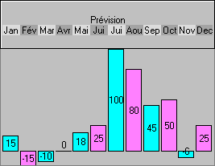

L'objet graphique est un objet pouvant contenir :
- du texte et/ou
- des images et/ou,
- des dessins de barres horizontales ou verticales.
Exemple :

La donnée associée à l'objet graphique doit contenir l'ensemble des commandes qui détermineront le dessin affiché à l'écran.
Les rubriques suivantes décrivent en détail toutes les commandes qui peuvent être placées dans un objet de ce type (avec un tableau récapitulatif final).
Compatibilité Win32 - Wpf :
Par rapport à la version Win32, une méthode totalement nouvelle est utilisée pour présenter les objets graphiques (qui utilise en particulier les fonctions d’affichage vectoriel de Wpf).
Il existe quelques différences de fonctionnement entre les deux systèmes. Les développeurs concernés pourront en consulter la liste dans le fichier « ObjetGraphique_WPF_vs_Win32.doc», situé dans le répertoire /Divalto/Exemples/ObjetGraphique.
Support Html
Le client Html5 supporte une version limitée de l'objet graphique.
Les commandes supportées par le client Html5 sont les suivantes :
• commandes générales:
- <max>,
• commandes de barres :
- <b>,
• commandes de couleurs de barre :
- <c>,
- <cc>,
• commandes de présentation des textes de barres :
- <bafv>,
• commandes de lignes :
- <s>,
- <e>,
• commandes de cadrage de texte :
- <ctx>,
- <cty>,
• commandes de textes :
- <t>,
- <m>,
- <l>,
- <r>,
- <a>.
Les autres commandes ne sont pas traitées par le client Html5, et seront ignorées.